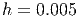

Consideremos o seguinte problema de teste:
Considere agora o método de Euler aplicado a este problema com passa
 :
:
Fixamos um , de forma que  . Mas observamos que
. Mas observamos que
 somente quando
somente quando  e solução positivas somente quando
e solução positivas somente quando
 .
.
Conclusão: Se o passo  for muito grande, o método pode se tornar
instável, produzindo solução espúrias.
for muito grande, o método pode se tornar
instável, produzindo solução espúrias.